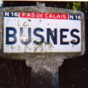
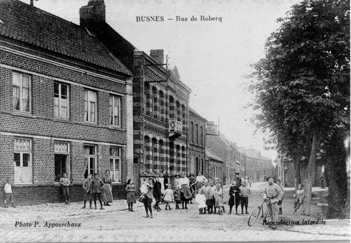
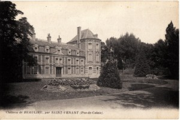
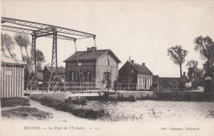

Présentation
|  | L’Association le « Groupe Historique de Busnes » a été créée en 1995 à l’initiative de quelques Busnois férus d’histoire et en particulier de l’histoire de leur village. |
Composée actuellement d’une vingtaine de membres, ceux-ci continuent d’entretenir la mémoire du village.
Leur mission : réunir photos, documents, témoignages. La consultation des Archives Départementales enrichit ce fonds déjà bien fourni.
Association de partage de connaissances, elle en fait profiter les Busnois intéressés par leur patrimoine.
|  |
Un bulletin annuel est édité lors de la Foire à l’échalote. Le numéro 18 est sorti lors de la Foire à l’Echalote 2020. Le site est accessible à tous : busnes-histoire.fr L’Association possède également son Facebook. |
N’hésitez pas à apporter votre collaboration en fournissant tout document susceptible de les intéresser. Après scan, ils vous seront rendus très rapidement et viendront enrichir les milliers de documents de leur photothèque. |
 |
|  |
Nous pouvons également venir vous rendre visite afin que vous nous parliez de « votre ancien temps ». Au plaisir de vous rencontrer, Anne-Marie Delporte Présidente du Groupe Historique de Busnes |